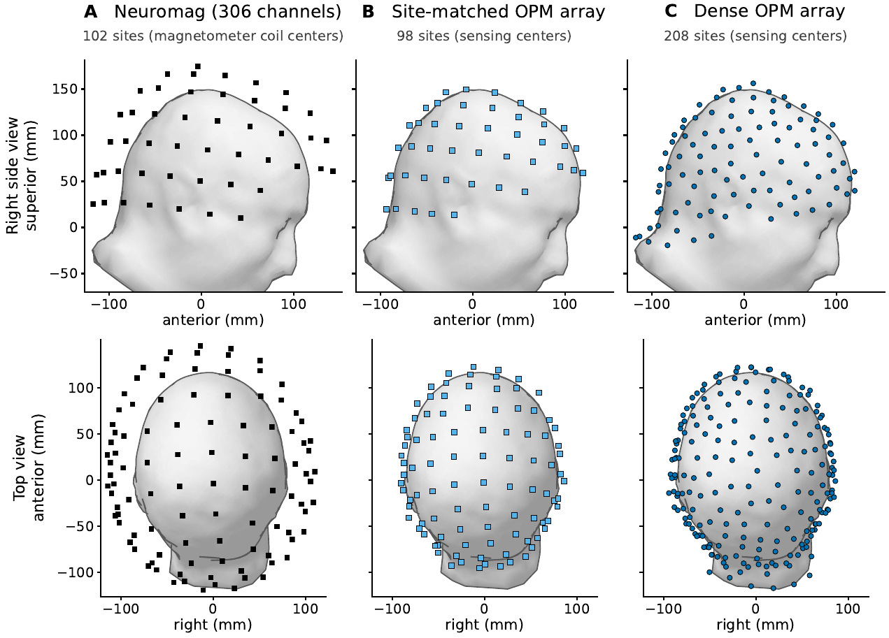
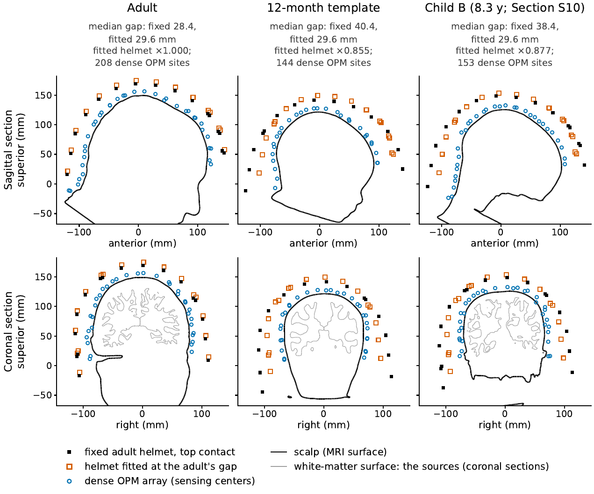
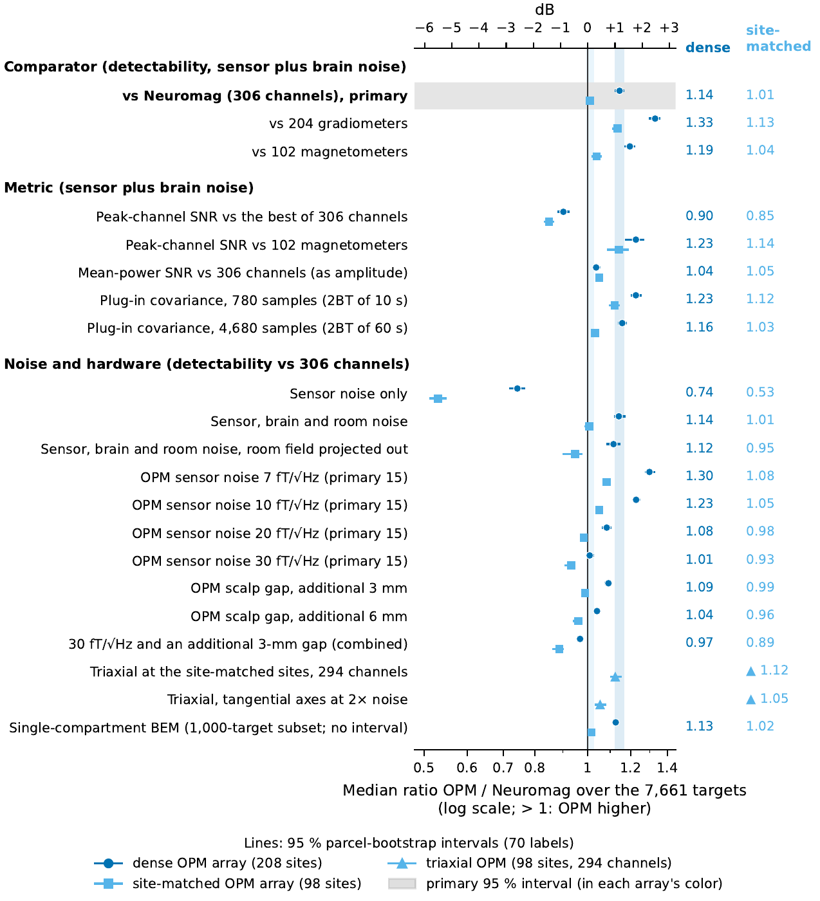
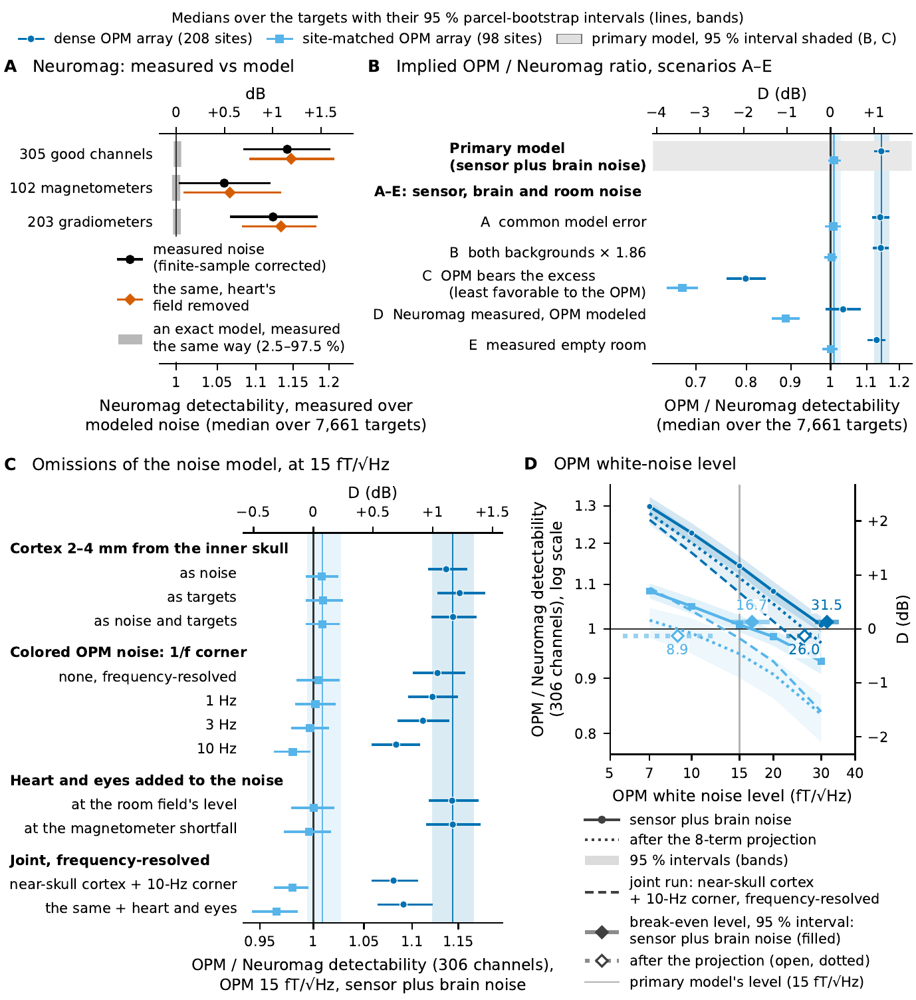
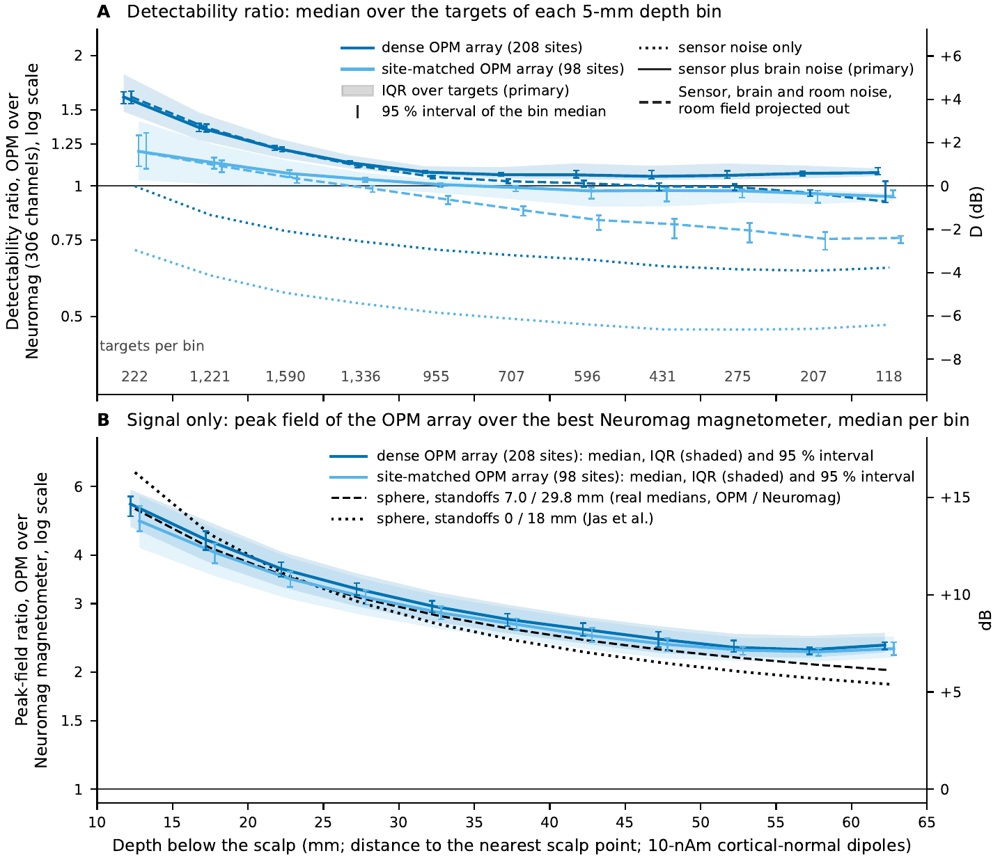
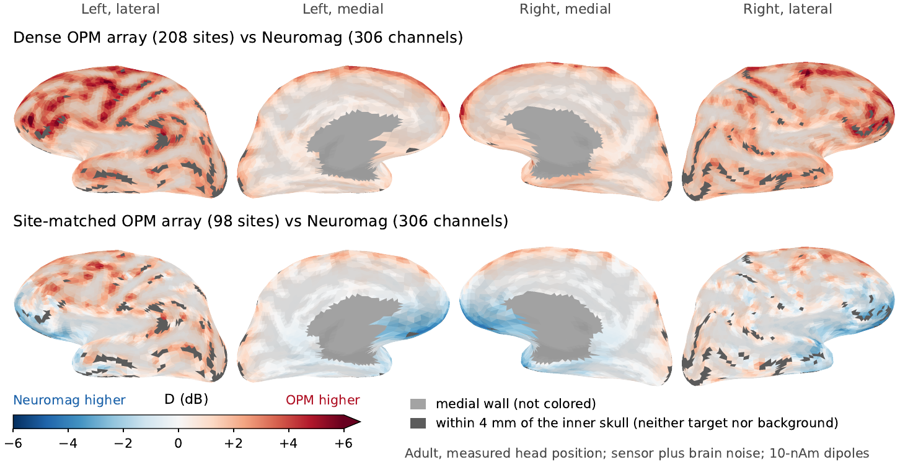
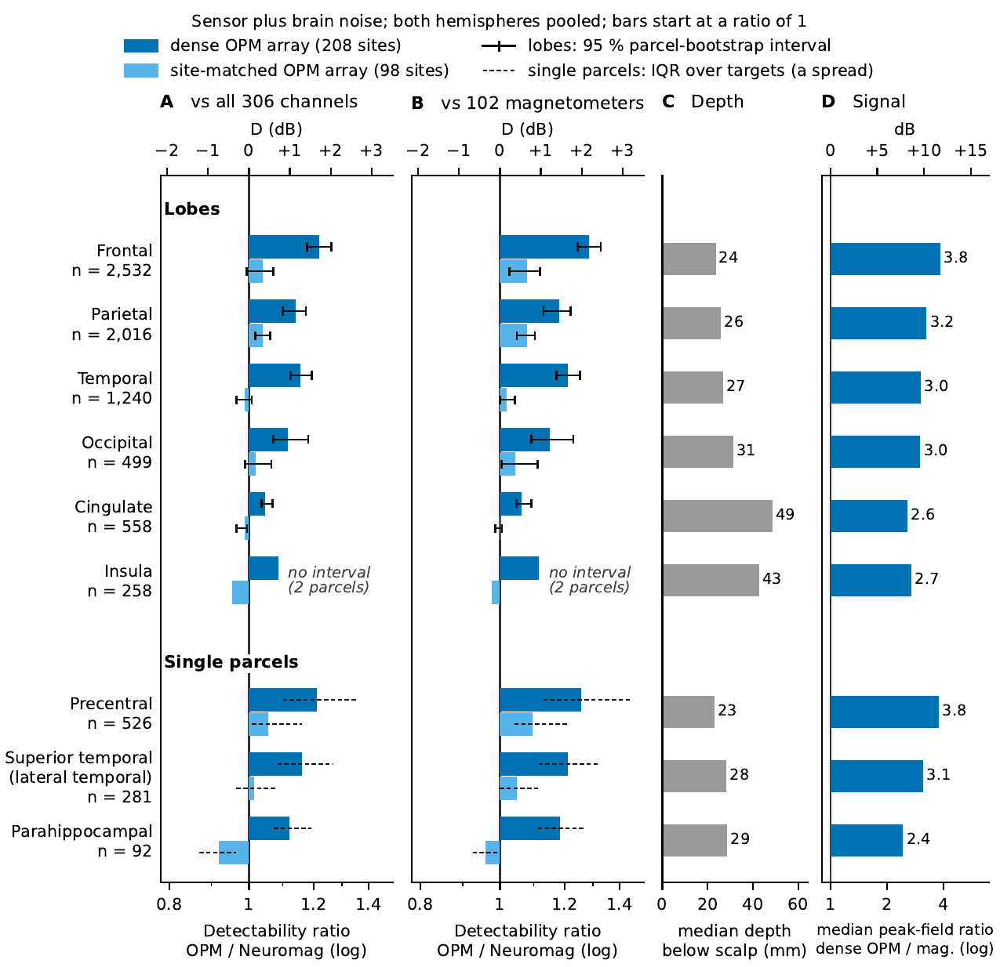
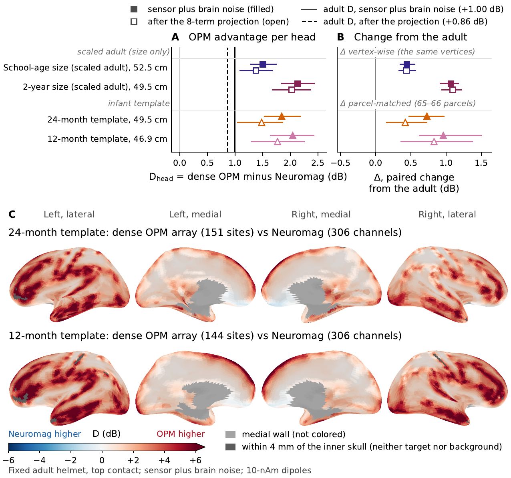
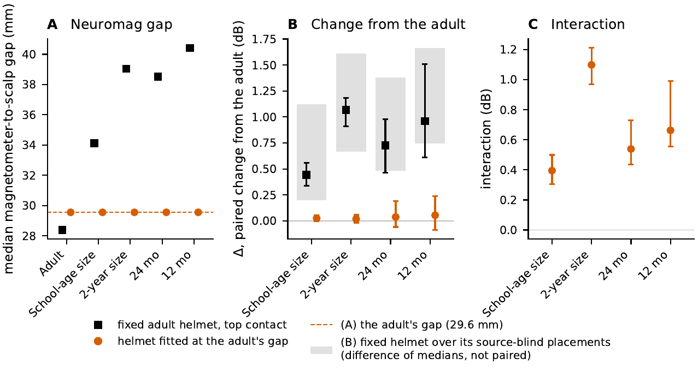
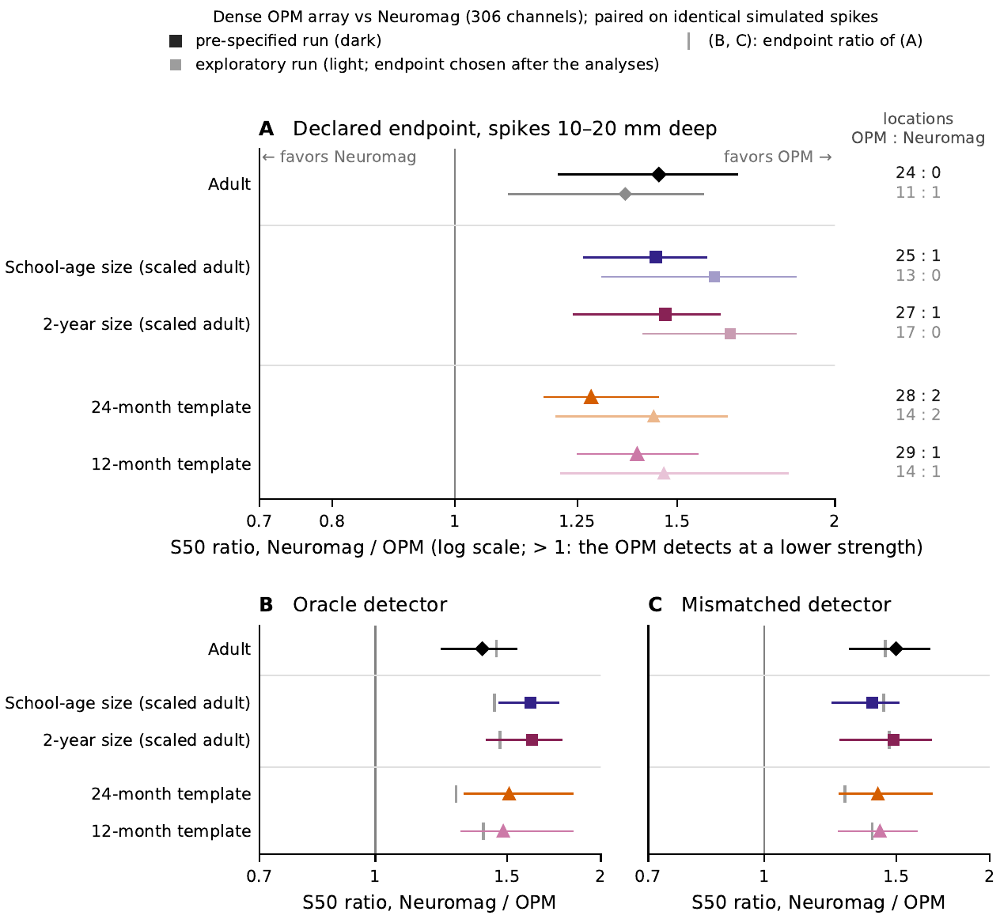

Sensor noise, array design and helmet fit in on-scalp and cryogenic magnetoencephalography: a simulation study in adult and pediatric head models
- aLexington High School, 251 Waltham Street, Lexington, MA 02421, USA
- bAthinoula A. Martinos Center for Biomedical Imaging, Massachusetts General Hospital and Harvard Medical School, 149 Thirteenth Street, Charlestown, MA 02129, USA
∗Corresponding author. Email address: mjas@mgh.harvard.edu (Mainak Jas)
Highlights
- With modeled brain noise, a dense OPM array has higher detectability than SQUID MEG
- The dense-array advantage is as large as the model’s error in SQUID detectability
- Which system has the higher SNR depends on OPM noise, array design and SNR measure
- Much of the larger OPM advantage in small heads reflects the adult helmet’s fit
- Idealized detectors detect weaker simulated spikes with dense OPMs than with SQUIDs
Abstract
Optically pumped magnetometers (OPMs) can be placed on the scalp, where the magnetic field of cortical sources is stronger than at the superconducting quantum interference devices (SQUIDs) of conventional magnetoencephalography (MEG). For interictal epileptiform discharges, however, OPMs have shown a higher signal-to-noise ratio (SNR) than SQUIDs in some comparisons but not in others. A spherical-head analysis with point sensors at fixed standoffs and an assumed OPM-to-SQUID noise ratio predicted the largest on-scalp benefit for superficial sources and small heads. Using realistic head models, we examined how the relative SNR depends on noise, array design and helmet fit. We compared the matched-filter detectability of cortical sources under sensor, brain and environmental noise between the 306-channel Neuromag SQUID system and two single-axis OPM arrays, one dense (208 sensors) and one at the SQUID sites (98 sensors). An adult head, two downscaled copies and two infant templates were each placed in the adult helmet and in a helmet fitted at the adult’s median sensor-to-scalp distance. In the adult, brain noise, which dominated in both systems, reversed the ranking obtained under sensor noise alone. At an OPM noise of 15 fT/√Hz, the dense array had the higher detectability at almost all cortical sources (median ratio 1.14, 95 % parcel-bootstrap interval [1.12, 1.17]), whereas OPMs at the SQUID sites showed no clear difference. The OPM noise level and array design determined which system had the higher detectability; the choice of SQUID channels and SNR measure determined which system a sensor-level SNR favored. The dense-array advantage, however, was as large as the noise model’s underestimate of SQUID detectability: with measured SQUID noise and modeled OPM noise, the ratio fell to 1.03 [0.99, 1.08]. In the adult helmet, the smaller heads had greater sensor-to-scalp distances and a larger dense-array advantage than the adult (by +0.44 to +1.07 dB). In the fitted helmet, almost none of this excess remained (+0.02 to +0.05 dB), as the smaller heads’ fewer OPM sites offset a small head-size gain. Under the modeled noise, the dense array detected simulated superficial spikes at a 22–32 % lower dipole strength than the SQUID system, with idealized detectors at a nominal false-event rate. Overall, the results suggest that noise, array design and helmet fit, rather than sensor proximity alone, determine whether OPMs provide a higher SNR than SQUIDs, which is of interest when comparing OPM and SQUID recordings in pediatric and epilepsy studies.
Keywords: Magnetoencephalography (MEG), Optically pumped magnetometer (OPM), Superconducting quantum interference device (SQUID), Pediatric neuroimaging, Helmet fit, Noise covariance, Interictal spikes
1. Introduction
In conventional magnetoencephalography (MEG), the sensors are superconducting quantum interference devices (SQUIDs) housed in a rigid cryogenic helmet. Optically pumped magnetometers (OPMs), in contrast, measure the magnetic field of the brain at room temperature and can therefore be worn on the scalp (Boto et al., 2017; Iivanainen et al., 2017). Because the SQUID helmet is built for adults, a child’s head is separated from its sensors by a wide and uneven gap, whereas an on-scalp array can fit any head (Feys and De Tiège, 2024; Hill et al., 2019). In clinical recordings in epilepsy, interictal discharges are larger with OPMs than with cryogenic MEG (Feys et al., 2022; Ren et al., 2025). The signal-to-noise ratio (SNR) of these discharges, however, was higher with OPMs in some comparisons (Feys et al., 2022, 2025; Ren et al., 2025) and equal or slightly lower in others (Hillebrand et al., 2023; Schwartz et al., 2025). The weakest OPM results concern temporal and mesial temporal sources (Feys et al., 2024, 2025; Shen et al., 2026).
One might expect on-scalp sensors to detect every source better, simply because they are closer to it. However, an OPM is a noisier sensor than a SQUID magnetometer, so a larger field does not by itself give a higher SNR. A spherical-head analysis made this trade-off explicit, with a point magnetometer on the scalp for the OPM and one 18 mm above it for the SQUID (Jas et al., 2026). At intermediate ratios of OPM to SQUID noise, the OPM had the higher single-channel SNR only for sources shallower than an equal-SNR depth, the depth at which the two sensors have the same SNR. This depth was about 28 mm in an adult head when the OPM noise was three times the SQUID noise. Because the SQUID sensors stayed at the same distance from the scalp in every head size, more of a small brain lies within this depth, and the analysis therefore predicts a larger OPM benefit in children.
A realistic comparison adds three elements to this picture: sensor, brain and room noise as each array records it, arrays of finite size on a real scalp, and a real SQUID helmet around a smaller head. Some of these elements have been added in earlier simulations. When only sensor noise was modeled, an array of helium-4 OPMs improved relative to SQUID magnetometers as the head shrank, both in a standard adult placement and in a helmet fitted at a constant gap (Zahran et al., 2022). When brain noise was added in one adult, simulated spikes were visible on the scalp from smaller cortical patches with on-scalp than with conventional MEG (Westin et al., 2023). In contrast, when brain noise but no sensor noise was modeled in epilepsy patients, OPMs placed at the SQUID sites did not raise the channel-averaged SNR in any region. The OPM–SQUID difference nevertheless followed the ratio of sensor distances, which tracked head circumference (Matsubara et al., 2026).
None of these studies compared head size and helmet fit with brain noise included, and none checked its noise model against a measured covariance. Moreover, the only helmet fitted at a constant gap (Zahran et al., 2022) matched the adult’s closest scalp-to-sensor distance, not the adult’s median gap. Whether the larger OPM advantage expected in children reflects the small head itself or the poor fit of the adult helmet has therefore not been tested. It is also unclear how far a modeled comparison can be trusted while the OPM noise has not been measured.
Here, we compared the 306-channel Neuromag system with two OPM arrays in a realistic adult head and in smaller heads: a dense array packed over the scalp, and a site-matched array with one OPM at each Neuromag site. As the measure, we used the detectability of each cortical source by a matched filter that knows the field pattern of the source and the covariance of the sensor, brain and room noise. First, we asked what determines the comparison in the adult, and we checked the noise model against Neuromag’s measured noise. Second, we placed smaller heads in the adult helmet and in a helmet fitted to each head at the adult’s gap, to separate head size from helmet fit. Third, we asked whether the detectability difference carries over to the detection of simulated interictal spikes by idealized detectors. We examined regional differences and spike localization as exploratory questions. In this model, proximity alone did not decide the comparison. The array, the OPM noise floor and the fit of the SQUID helmet, which sets the distance of the SQUIDs from a smaller head, determined whether and by how much the on-scalp array had the higher detectability. This result bears on how OPM and SQUID recordings are compared in children and in epilepsy.
2. Materials and methods
2.1. Study design and estimands
To compare arrays without committing to a particular detector, we used the known-topography detectability of each source. This is the output SNR of the matched filter that knows the field pattern of the source and the covariance of the noise,
Here, \(\symbf{s}\) is the noise-free field of a 10-nAm cortical dipole at the channels of the array, and \(\symbf{C}\) is the noise covariance of the array (Section 2.4), taken as known (the oracle covariance). Two arrays were compared target by target, by the ratio \(d_{\mathrm{OPM}}/d_{\mathrm{Neuromag}}\) or, in decibels, by
which is positive when the OPM array has the higher detectability.
Each comparison was summarized over the cortex. For the adult, we took the unweighted median of the target-wise ratios over all 7,661 targets, including the 558 vertices on the medial wall. This convention was set for the adult before the smaller heads were added, and Table 2 relates it to theirs. Excluding these vertices would change the median ratio of the dense array to 1.15. Because the smaller heads differ in cortical area, we summarized each of them by the area-weighted median of \(D\) over its cortical targets, medial wall excluded. To compare a smaller head with the adult, we placed both in the same helmet and pose (Section 2.3) and computed the change from the adult, \(\Delta\), from paired differences rather than as the difference of their medians. For the scaled adults, which share the adult’s vertices, \(\Delta\) was computed as the area-weighted median of \(D_{\mathrm{head}}(v) - D_{\mathrm{adult}}(v)\) over common vertices. For the other heads, the area-weighted median of \(D\) was taken within every atlas parcel that holds at least 10 targets in both heads, and \(\Delta\) was computed as the median of the parcel differences, weighted by the adult’s parcel areas.
2.2. Head models
We used the MNE sample subject as the adult head (Gramfort et al., 2013), with its FreeSurfer surfaces and atlas labels (Desikan et al., 2006; Fischl, 2012). The vertices of an MNE-Python oct-6 source space on the white-matter surface were used as targets, each a 10-nAm dipole normal to the cortex. We kept only vertices at least 4 mm inside the inner skull. The depth of a target was defined as its distance to the nearest point of the MRI scalp. Forward fields were computed with a three-layer boundary-element model (BEM; Hämäläinen and Sarvas, 1989) with conductivities of 0.3, 0.006, 0.3 S/m, whose outer surface was the MRI scalp. The BEM was solved by linear collocation, with 5,120 triangles per skull surface and the scalp refined to 20,480 triangles. Compared with an exact three-shell sphere, the field of this BEM had a 95th-percentile error of 0.074 % at 2 mm and 0.038 % at 15 mm outside the outer surface. When the scalp was refined from 5,120 to 20,480 triangles, the ratio of the dense array changed from 1.149 to 1.141 on a subset of targets.
Of the eight smaller heads (Table 1), four carry the main analysis, and we call them the principal smaller heads. Two of them were made by scaling the adult to school-age size and to the head circumference of the 24-month template. These scaled adults keep the adult anatomy exactly and are the main test of head size and helmet fit. The other two are the 24- and 12-month infant templates, averages of many MRIs (O’Reilly et al., 2021; Richards et al., 2016), which add infant head shapes, with the caveat about their scalp convention given below. Because all of the anatomies share the noise calibration, the adult’s conductivities and the processing, none of them is an independent replication.
The remaining four heads are reported separately in Section S10. The 18-month template was classed as misregistered by an MRI check, because its white surface fitted its T1-weighted image best after a 2.3-mm shift, compared with 0.5 mm in the other two templates. The MRIs of three typically developing school-aged children, A, B and C (7.8–8.7 years), were taken from OpenNeuro dataset ds005234 (Fadeev et al., 2024, 2025). Their anatomy was prepared in three further steps (Section S4). In the dataset, the inner skull of these children lay a median of 0.8–2.5 mm below the scalp over the upper head. We therefore moved it inward, toward 8 mm below the scalp, while keeping it at least 2 mm from the white-surface vertices. We transferred their fiducials from the adult by a similarity transform fitted between the white surfaces and checked their surfaces against their T1-weighted MRIs (Fig. S6). The surfaces were found to be registered to the images, but the check cannot verify the cortex within a few millimeters of the scalp. Because the 4-mm limit on targets also left out 94–100 % of the children’s cortex within 8 mm of the scalp, their results do not describe a near-scalp cortex.
We made two further checks of the principal heads. First, the scalps of the infant templates lie 1.3–1.6 mm outside their own MRI head boundaries, whereas the adult’s scalp lies 1.3 mm inside, a difference of 2.6–3.0 mm between the conventions (Section S4.3). Second, replacing the three-layer BEM with a single-compartment BEM, which has no skull or scalp conductivity layer, changed the difference between the median \(D\) of each principal head and that of the adult by −0.02 to +0.01 dB. This check tests the conductivity layers, not the position of the scalp or the inner skull.
| Head | Class | Head circumference (cm) | Cortex (cm2) | Targets | OPM sites, dense / site-matched |
|---|---|---|---|---|---|
| Adult | MNE sample subject | 58.6 | 1,878 | 7,103a | 208 / 98 |
| Principal smaller heads | |||||
| School-age size | scaled adult | 52.5 | 1,470 | 6,949 | 174 / 89 |
| 2-year size | scaled adult | 49.5 | 1,290 | 6,855 | 155 / 90 |
| 24-month template | infant template | 49.5 | 1,062 | 7,559 | 151 / 83 |
| 12-month template | infant template | 46.9 | 895 | 7,592 | 144 / 82 |
| Reported separately (Section S10) | |||||
| 18-month templateb | infant template | 49.1 | 975 | 7,363 | 157 / 80 |
| Child A (7.8 years) | school-aged childc | 52.0 | 1,852 | 7,138 | 155 / 90 |
| Child B (8.3 years) | school-aged childc | 48.6 | 1,666 | 6,866 | 153 / 85 |
| Child C (8.7 years) | school-aged childc | 53.5 | 1,869 | 7,392 | 167 / 91 |
2.3. Sensor arrays and helmets
We modeled the Neuromag system (306 channels; “Neuromag” below) with the sensor geometry of the sample recording and the T3 coil definitions of MNE-Python (types 3014 and 3024). Each gradiometer was integrated at 8 points and each magnetometer at 16. Neuromag’s white noise was set to the typical value of the TRIUX datasheet, 3.5 fT/√Hz for the magnetometers and 3.6 fT/(cm √Hz) for the gradiometers (Elekta Neuromag, n.d.). Its coils lay 18 mm outward from the inner surface of the helmet (the Dewar spacing), and no signal-space separation was applied. We compared each OPM array with all 306 Neuromag channels and, as alternative comparators, with the 204 gradiometers or the 102 magnetometers alone. Besides detectability, we computed two sensor-level measures, the peak-channel SNR and the mean-power SNR (Goldenholz et al., 2009), which are defined in Table 2.
Each OPM was modeled as a single-axis sensor whose sensing center lay nominally 7 mm above the MRI scalp (Alem et al., 2023; Osborne et al., 2018), and a few sites were moved outward for clearance. The field of each OPM was averaged over a 10-mm cube with a 27-point Gauss–Legendre rule, a modeling choice that changes the peak field by at most 1.9 %. The sensitive axis was taken as the head-surface normal, averaged within 15 mm of the site. Nearly radial axes would give the dense array a ratio of 1.07 instead of 1.12 with the room field projected out (Sections 2.4 and S3). We set the OPM white noise to 15 fT/√Hz in the primary analysis, flat over 1–40 Hz, and varied it over 7, 10, 15, 20 and 30 fT/√Hz.
The OPMs were placed on the scalp above the plane through the preauricular points and a point 30 mm above the nasion, at least 20 mm from either preauricular point. The dense array was packed into this region at a minimum spacing of 17 mm, which gave 208 sites on the adult, more than any clinical OPM array in the studies of Table S19. For the site-matched array, one OPM was placed at each Neuromag site whose projection onto the scalp fell inside the region, 98 of the 102 sites (Fig. 1). Clinical systems reach about 100–128 channels with dual- or triaxial sensors at fewer sites (Feys et al., 2025; Shen et al., 2026). We did not model such arrays, and neither single-axis array represents one, because both differ from clinical arrays in site count and sensing axes. To test the effect of extra axes, we added a triaxial array at the site-matched sites (294 channels).
In the fixed adult helmet, the adult’s sensors and noise were kept for every head (Fig. 2). For the primary placement in this helmet, which we call top contact, each head was first posed with its head coordinate frame where the adult’s had been recorded. It was then raised until the nearest magnetometer coil was 20 mm from the scalp, a best-fit assumption that favors Neuromag (Gaetz et al., 2008; Tesan et al., 2010). To describe the effect of placement, we also used a family of 12 source-blind placements, chosen from the geometry alone (contacts, shifts and rotations; Section S5). The dense array was rebuilt on every smaller head by the same coverage and spacing rules, and the site-matched array took the Neuromag sites of that head at top contact (Table 1).
To separate head size from helmet fit, we also placed each head in a helmet fitted at the adult’s gap. The head was moved sideways from the recorded pose onto the midline of the helmet, without being raised to contact (the laterally centered pose). The helmet was then scaled about the head origin until the median magnetometer-to-scalp gap equaled that of the adult in the same pose, 29.6 mm. For comparison, the adult’s gap is 29.8 mm at its measured head position and 28.4 mm at top contact. No coil was allowed within the 18-mm Dewar spacing of the scalp, a limit that was not reached in any principal head. The fitted helmet keeps the adult’s sensors and does not model a pediatric SQUID system.
Our primary measure of helmet fit, which we call the interaction, is the paired change, from the adult to a smaller head, in how much detectability Neuromag loses in the fixed helmet relative to the fitted one. For each target, the contrast between the two helmets within one head is
in which the detectability of the OPM cancels. The interaction of a smaller head is obtained by applying the \(\Delta\) estimator of Section 2.1 to \(F\) instead of \(D\). This is the area-weighted median of \(F_{\mathrm{head}}(v) - F_{\mathrm{adult}}(v)\) over common vertices for the scaled adults, and the median of the parcel differences, weighted by the adult’s parcel areas, for the templates. As a median of paired differences, it equals neither the difference of the two median contrasts nor \(\Delta_{\mathrm{fixed}} - \Delta_{\mathrm{fitted}}\), and Table S6 gives the non-additivity residual of each head. The interaction does not depend on the assumed OPM noise, but it does depend on the modeled Neuromag noise and on the anatomy.
We used three secondary controls of the construction (Section S5). One helmet was fitted at the adult’s top-contact gap, 28.4 mm. Another was scaled with the head, which scales the gap too. In the third, the fitted helmet was kept but the adult’s dense array was subsampled to the number of sites of each smaller head, to compare the heads at equal OPM site count.


2.4. Noise model, validation and sensitivity analyses
All arrays were exposed to the same noise sources in one band of 1–40 Hz. The noise had three parts: white sensor noise, a cortical background of spontaneous brain activity, and the field of distant sources in the room. The oracle covariance of each array was computed in closed form as
Here, \(\symbf{\Sigma}_{\mathrm{n}}\) is the diagonal covariance of white sensor noise. \(\symbf{L}\) holds the lead fields of 1,755 independent cortex-normal background dipoles on a 7-mm grid, and \(\symbf{A}\) is the diagonal matrix of their Voronoi-cell areas. \(\symbf{E}\) and \(\symbf{\Sigma}_{\mathrm{e}}\) are the responses of the array to eight external-field terms (three uniform and five linear-gradient components, the room field) and their coefficient covariance. The background is a cortically constrained form of the random-dipole model of spontaneous activity (de Munck et al., 1992). The moment variance of each background dipole is \(\sigma^{2}\) times its area (\(\sigma^{2}\) = 0.0354 nAm2 per mm2), and, as for the targets, the cortex within 4 mm of the inner skull is omitted from the background.
We fitted two quantities to the sample dataset. The room-field covariance \(\symbf{\Sigma}_{\mathrm{e}}\) was fitted to its empty-room recording, and \(\sigma^{2}\) was set so that the modeled brain noise of the median good gradiometer matched the measured one (a root-mean-square value of 37.1 fT/cm). Everything else, apart from the datasheet sensor noise of both systems, is predicted rather than fitted. Because these predictions come from the same recording, the checks below test the model within that recording, not in another subject or session. We analyzed four noise conditions: sensor noise only; sensor plus brain noise, the primary condition; sensor, brain and room noise; and the third condition with the room field removed from every array by one noise-weighted projection. This fourth condition, the room field projected out, represents interference suppression and was designated the secondary condition before any simulation.
To check the model, we compared its Neuromag covariance with the measured covariance and recomputed Neuromag’s detectability with it (Section S3). As the measured covariance, we used the empirical covariance, without regularization or projections, of the 320 pre-stimulus windows (−0.2 to 0 s; 38,400 samples) of the recording band-passed to 1–40 Hz, with one bad channel excluded. Its brain noise was taken as its difference from the empty-room covariance (63,666 samples). Because a covariance estimated from finite data inflates detectability, we removed this inflation with surrogates. We generated 40 phase-randomized surrogates of the whole recording, which keep its spectra and cross-spectra, estimated their covariance from the same samples, and divided the measured detectability of each target by the resulting inflation (median factor 1.033).
Because the OPM covariance cannot be measured here, we computed the implied OPM/Neuromag ratio under five assumptions about how each system’s real noise departs from the model. In scenario A, both systems share the model’s error, so the modeled ratio stands. Scenario B scales both cortical backgrounds by \(k\) = 1.86, the factor that makes the modeled magnetometer brain noise match the measured one. In scenario C, Neuromag takes its measured covariance and the OPM background is scaled by \(k\). Scenario D gives Neuromag its measured covariance and keeps the model for the OPM. In scenario E, Neuromag takes its measured empty-room noise together with the modeled brain noise.
In each sensitivity analysis, we changed one element of the adult model and recalibrated \(\sigma^{2}\). The cortex 2–4 mm from the inner skull, which we call the near-skull cortex, was added to the background, to the targets, or to both. The OPM noise was made colored (1/\(f\) plus white noise, with corners at 1, 3 and 10 Hz) under a matched filter that also whitens across frequency, and idealized cardiac and ocular sources were added. In the joint runs, the near-skull cortex was added to the background and the OPM noise was given a 10-Hz corner under the frequency-whitening detector, with and without the cardiac and ocular sources.
2.5. Simulated interictal spikes
The spike simulations were designed to ask whether the detectability difference carries over to the detection of transient events by an idealized detector under the modeled noise. They therefore check this carry-over and do not test the noise model. The noise model was run in the time domain, in segments shared by all arrays, and the spike was the spike-wave complex of Hunold et al. (2016), stretched to three morphologies. The data were read by two matched-filter detectors, both whitened with a Ledoit–Wolf covariance (Ledoit and Wolf, 2004) estimated from 10 min of null data rather than with the oracle covariance.
The oracle detector knew the source and the time and tested at a per-trial false-positive probability of 0.001. The practical detector knew neither. It scanned candidate field patterns on a 10-mm grid that did not contain the true sources, and its thresholds for a nominal 1 false event per minute were fixed in advance (frozen) on independent null data. Both detectors are idealized, because they use the true forward model and the simulated waveform family. S50, the dipole strength detected in 50 % of events, was interpolated linearly in log strength between the tested strengths. In both spike runs, the adult was placed at its measured head position, where its area-weighted \(D\) is 0.28 dB higher than at top contact, and the smaller heads were placed at top contact.
In the exploratory run, spikes were placed at 72 locations per anatomy, stratified by orientation and by depth in four bands from 10–20 to 45–70 mm, with 18 locations in each band. At each location, 18 focal events of 10–320 nAm and patch events from cortical patches of 10-mm radius were simulated, each event in its own noise realization and identical for every array. Every comparison was made within one anatomy, and the anatomies are not ranked against one another. We localized the simulated spikes at 24 locations by equivalent-current-dipole fits and by dynamic statistical parametric mapping (dSPM; Dale et al., 2000) at the true peak sample, through a single-compartment BEM with a coregistration error of 2 mm and 2°. Every event, detected or not, was used in the paired comparisons of localization error, and a joint measure also required detection (Section S7).
We then pre-specified a second run, whose endpoint compared the dense OPM array with Neuromag under the practical detector at a nominal 1 false event per minute, for focal spikes 10–20 mm below the scalp in every anatomy. For this run, we drew 36 new locations per anatomy and five noise replicates per event, the first carrying the endpoint, and used separate null data for threshold fitting and for rate evaluation. The threshold, set on 20 min of calibration null data, rests on about 20 false events, a Poisson uncertainty of about 22 %. In contrast, the threshold of the oracle detector does not depend on that calibration.
The declared statistic was a two-sided sign-flip test on the per-location differences in detection counts, Holm-adjusted over the anatomies (Holm, 1979) at \(\alpha\) = 0.05. The paired S50 ratio \(r\) was used as the effect size, so the OPM array detects a spike at a strength \(100\,(1 - 1/r)\) % lower than Neuromag. The declared test estimated p by Monte Carlo when more than 20 location differences were nonzero. We report exact p values over all sign patterns instead, which give the same decisions in all 25 families of Holm-adjusted tests (Section S7). As secondary analyses, we declared a mismatched detector (off-template morphologies, candidate patterns from a single-compartment BEM and a shared coregistration error of 2 mm and 2°) and analyzed the site-matched array, the oracle detector and thresholds re-fitted on held-out null data.
2.6. Statistical analysis
Intervals over targets were computed as 95 % percentile bootstrap intervals that resample atlas parcels as units, the adult’s 70 labels or the parcels of each smaller head. We used 1,000 resamples for the primary comparisons, the noise-model sensitivity analyses and the measured-covariance check, and 200 for the other sensitivity analyses of the adult and for some secondary constructions of the smaller heads (Table S16). Resampling parcels keeps the dependence between neighboring targets within a parcel, and the bootstrap of \(\Delta\) and of the interaction resamples the parcels together with their paired differences. In the spike study, the location was used as the unit of resampling and testing.
The parcel intervals describe how sensitive a whole-cortex median is to the parcels it pools, within one anatomy and one noise model. They are not population confidence intervals or the spread of effects over the cortex, and they exclude the larger uncertainties of model error, head placement and between-subject variation. Therefore, we report whether an interval includes 1 (or 0 dB) as a description, not as a test. The main estimands are listed in Table 2, and all of them in Table S2.
Several choices were made after results were known. The exploratory spike endpoint, which was chosen from 24 comparisons per OPM array, the primary helmet placement and the regions of interest were all named after the whole-cortex results were known. The helmet fitted at the adult’s gap, the check of the noise model against the measured covariance with its five scenarios, and the sensitivity analyses were added later, without changing the model. The model itself was revised while results were known (Section S8.2). The pre-specified run was declared in a configuration file committed to the public code repository the day before it was run, with the same code and configuration. Only the history of the repository attests this, and the run was not registered externally. Its number of locations, double the exploratory 18 per band, was chosen after two pilot runs in child A whose outputs were not kept, and their seeds were not reused.
| Estimand | Definition | Unit; interval | Section |
|---|---|---|---|
| Adult ratio | Median over all 7,661 targets (medial wall included) of the target-wise ratio \(d_{\mathrm{OPM}}/d_{\mathrm{Neuromag}}\) | ratio; parcel bootstrap | 3.1–3.3 |
| Scenario ratio | The adult ratio with sensor, brain and room noise (Neuromag’s 305 channels, one bad channel excluded) under one of five assumptions about how each system’s real noise departs from the model (scenarios A–E) | ratio; parcel bootstrap | 3.2 |
| Break-even noise | OPM white noise at which the adult ratio equals 1, under the modeled Neuromag noise | fT/√Hz; parcel bootstrap | 3.1, 3.2 |
| \(\Delta\) | Area-weighted median of the paired differences in \(D\) between a smaller head and the adult, each in the same helmet and pose: per vertex for the scaled adults, per parcel (weighted by the adult’s parcel areas) otherwise | dB; parcel bootstrap | 3.4, 3.5 |
| Interactiona | The \(\Delta\) estimator applied to the within-head contrast between the fixed and the fitted helmet, \(F\) of Eq. (3); a paired median, not \(\Delta_{\mathrm{fixed}} - \Delta_{\mathrm{fitted}}\) | dB; parcel bootstrap | 3.5 |
| Peak-channel SNR ratio | Each system’s largest ratio of a channel’s noise-free signal to its noise standard deviation, OPM over Neuromag | ratio; parcel bootstrap | 3.1, 4.3 |
| Mean-power SNR ratio | Channel mean of the squared SNRs (Goldenholz et al., 2009), OPM over Neuromag, as an amplitude ratio | ratio; parcel bootstrap | 3.1 |
| S50 ratio | Dipole strength for 50 % detection, Neuromag over OPM, from the location-pooled detection curves | ratio; location bootstrap | 3.6 |
2.7. Software
Simulations were run with MNE-Python 1.13.2 (Gramfort et al., 2013) and NumPy 2.5.3 (Harris et al., 2020), and the random seeds are listed in Table S17. The analysis code was written and run with the assistance of a generative AI tool (Claude, Anthropic), as declared at the end of the article. Its numerical components are covered by automated tests in the public repository.
3. Results
3.1. Determinants of the adult comparison
Brain noise reversed the comparison between the dense array and Neuromag (Fig. 3; Table 3). When only sensor noise was modeled, Neuromag had a higher detectability than either OPM array (Fig. 3). When brain noise was added, the dense array had the higher detectability at 7,657 of the 7,661 targets, with a median ratio to Neuromag of 1.14 [1.12, 1.17]. In contrast, the site-matched array did not differ clearly from Neuromag (1.01 [0.99, 1.03]). This pattern was kept when the room field was projected out, although the site-matched array moved slightly below parity.
Brain noise dominated the noise of both systems (Section S3). When the room field was included, brain noise made up 92 % of the in-band variance of an OPM channel in the dense array and 74 % of that of a Neuromag magnetometer. The room field made up most of the rest of the magnetometer variance, 25 %. As a result, brain noise raised the noise of a Neuromag magnetometer about 9.3-fold over its sensor floor, but that of an OPM only about 5.7-fold. Thus, the higher sensor noise of the OPM mattered less once brain noise was present.
The ratio also depended on which Neuromag channels served as the comparator and on the SNR measure (Fig. 3; Table 3). The dense array had a larger advantage against the gradiometers alone than against the magnetometers alone (Table 3). Peak-channel SNR is the closest analog of the sensor-level SNRs of clinical studies (Section S1). By this measure, the dense array had the higher SNR when compared with the magnetometers, but Neuromag had the higher SNR when its best channel of all 306 was used. Only small advantages were found with mean-power SNR, for both OPM arrays (Fig. 3). Which system a reported number favors thus depends on the Neuromag channels and the SNR measure it uses.
Among the model variants, the OPM noise floor had the largest effect (Fig. 4D; Table 3). As the OPM noise rose over the sweep, the ratio of the dense array fell to parity and that of the site-matched array fell below it (Fig. 4D). The break-even OPM noise, at which the ratio equals 1 under the modeled noise, was 31.5 [28.5, 34.9] fT/√Hz for the dense array (Fig. 4D, diamonds). The site-matched array broke even at 16.7 [14.0, 19.4] fT/√Hz, an interval that includes the primary level. With the room field projected out, the break-even levels fell to 26.0 [22.3, 29.5] and 8.9 [5.6, 12.4] fT/√Hz (Fig. 4D, open diamonds). All of these levels assume the modeled Neuromag noise, which the next section compares with the measured noise.
The other model variants moved the ratio of the dense array less over the ranges tested (Fig. 3; Table 3). An additional gap between OPM and scalp lowered the ratio but did not reverse it, whereas combining 30 fT/√Hz with an additional 3-mm gap did reverse it (0.97 [0.96, 0.98]; Fig. 3). A triaxial array at the site-matched sites recovered most of the dense advantage, and still recovered part of it when its tangential axes were twice as noisy (Fig. 3, triangles). The ratio changed little when the covariance was estimated from a finite number of simulated samples, as many as a minute of data would hold, or when a 3–70-Hz band was used. Thus, besides brain noise, the array and the OPM noise floor determined which system had the higher detectability in the adult, and the comparator and the SNR measure determined which system a reported SNR favored.

| Condition | Dense OPM array | Site-matched OPM array |
|---|---|---|
| Noise condition | ||
| Sensor noise only | 0.74 [0.72, 0.77] | 0.53 [0.51, 0.55] |
| Sensor plus brain noise (primary) | 1.14 [1.12, 1.17] | 1.01 [0.99, 1.03] |
| Sensor, brain and room noise, room field projected out | 1.12 [1.08, 1.15] | 0.95 [0.90, 0.98] |
| Comparator and SNR measure | ||
| Against the 204 gradiometers | 1.33 [1.30, 1.36] | 1.13 [1.11, 1.15] |
| Against the 102 magnetometers | 1.19 [1.17, 1.22] | 1.04 [1.01, 1.06] |
| Peak-channel SNR, against the magnetometers | 1.23 [1.17, 1.27] | 1.14 [1.08, 1.19] |
| Peak-channel SNR, against all 306 channels | 0.90 [0.88, 0.93] | 0.85 [0.83, 0.87] |
| Mean-power SNR | 1.04 [1.02, 1.06] | 1.05 [1.04, 1.06] |
| Model variants | ||
| OPM noise 7 fT/√Hz | 1.30 [1.27, 1.33] | 1.08 [1.06, 1.10] |
| OPM noise 10 fT/√Hz | 1.23 [1.21, 1.25] | 1.05 [1.03, 1.07] |
| OPM noise 20 fT/√Hz | 1.08 [1.06, 1.11] | 0.98 [0.97, 1.00] |
| OPM noise 30 fT/√Hz | 1.01 [0.99, 1.03] | 0.93 [0.91, 0.95] |
| Break-even OPM noise (fT/√Hz) | 31.5 [28.5, 34.9] | 16.7 [14.0, 19.4] |
| Additional OPM gap of 3 mm | 1.09 [1.07, 1.11] | 0.99 [0.97, 1.00] |
| Additional OPM gap of 6 mm | 1.04 [1.03, 1.05] | 0.96 [0.94, 0.97] |
| 30 fT/√Hz and an additional 3-mm gap | 0.97 [0.96, 0.98] | 0.89 [0.86, 0.90] |
| Plug-in covariance, 4,680 samples (60 s) | 1.16 [1.14, 1.18] | 1.03 [1.01, 1.05] |
| 3–70 Hz banda | 1.14 | 1.01 |
| Triaxial OPMs at the site-matched sites | – | 1.12 [1.10, 1.15] |
| tangential axes twice as noisy | – | 1.05 [1.03, 1.08] |
| Noise scenarios (sensor, brain and room noise) | ||
| A: both systems share the error of the model | 1.14 [1.12, 1.17] | 1.01 [0.98, 1.03] |
| B: both backgrounds scaled by \(k\) | 1.14 [1.12, 1.17] | 1.00 [0.98, 1.02] |
| C: Neuromag measured, OPM background scaled by \(k\) | 0.80 [0.76, 0.84] | 0.68 [0.65, 0.70] |
| D: Neuromag measured, OPM modeled | 1.03 [0.99, 1.08] | 0.89 [0.86, 0.92] |
| E: measured empty-room noise of Neuromag, modeled brain noise | 1.13 [1.10, 1.16] | 1.00 [0.98, 1.02] |
| Noise-model omissions | ||
| Cortex 2–4 mm from the inner skull as background | 1.14 [1.12, 1.16] | 1.01 [0.99, 1.02] |
| as targetsb | 1.15 [1.13, 1.18] | 1.01 [0.99, 1.03] |
| 10-Hz 1/\(f\) corner, primary detector | 1.07 [1.05, 1.10] | 0.98 [0.96, 0.99] |
| frequency-whitening detector | 1.08 [1.06, 1.11] | 0.98 [0.96, 1.00] |
| Joint run: near-skull background, 10-Hz corner, frequency-whitening detector | 1.08 [1.06, 1.11] | 0.98 [0.96, 1.00] |
| with cardiac and ocular sources | 1.09 [1.06, 1.12] | 0.97 [0.94, 0.99] |
3.2. The noise model against measured Neuromag noise
When we compared the model with Neuromag’s measured noise, it reproduced some properties and missed others (Figs. S2 and S3). It predicted 0.73 of the measured brain-noise amplitude of the magnetometers, a quantity not used in its calibration, and 0.89 with the field of the heart removed. The gradiometer level at randomly held-out sites agreed with the measurement nearly by construction (1.00, with a 95 % range of [0.93, 1.09] over 1,000 random splits; Fig. S3B). However, the modeled brain noise was too flat from inferior to superior sites. Calibrated on the inferior half of the sites, it predicted 1.34 times the measured gradiometer amplitude of the superior half. Calibrated on the superior half, it predicted 0.75 times that of the inferior half. The model also predicted the per-channel variances poorly, and its magnetometer correlations fell off with distance faster than the measured ones.
Thus, the measured covariance differed from the modeled one in structure as well as in level. The positive part of the difference between the measured and modeled magnetometer brain-noise covariances, that is, the excess of the measured brain noise over the model, summed to 1.10 times the summed variance of the modeled brain noise. Sampling error alone would give 0.02–0.05, and the excess was concentrated in a few far-field components (Section S3). When its measured covariance was used, Neuromag had 1.14 [1.08, 1.20] times its modeled detectability (Fig. 4A), a factor as large as the whole advantage of the dense array. This factor varied by lobe, from 0.89 in the temporal lobe to 1.40 in the cingulate. The measured covariance thus held more brain-noise variance than the model and yet gave Neuromag a higher detectability. Detectability depends only on the noise along the field pattern of each source after whitening. The measured noise must therefore be lower than the model along the cortical field patterns, with its excess in directions that the whitening down-weights.
What this implies for the OPM depends on its real noise, which no measurement here constrains (Fig. 4B; Table 3). Scenarios A, B and E left both modeled ratios nearly unchanged, whereas scenario C, the least favorable to the OPM, lowered both below parity. Under scenario D, the ratio of the dense array fell to 1.03 [0.99, 1.08], an interval that includes 1 (Fig. 4B). The ratio of the site-matched array fell to 0.89 [0.86, 0.92], below parity. Under scenario D, neither OPM array therefore had a clear advantage over Neuromag at the primary OPM noise.
Scenario D also moves the break-even levels. Because Neuromag’s measured detectability does not change with the OPM noise, the ratio under scenario D still falls as the OPM noise rises, starting from 1.03 for the dense array and 0.89 for the site-matched array at 15 fT/√Hz. The break-even level of the dense array would then lie near 15 fT/√Hz rather than at 31.5 fT/√Hz: above it at the point estimate, although the interval of the ratio includes 1. It would lie below 20 fT/√Hz if its ratio fell between these levels as the modeled ratio does, from 1.14 to 1.08 (Table 3). The modeled ratio of the site-matched array rises only from 1.01 to 1.08 between 15 and 7 fT/√Hz, so by the same reasoning this array would not break even within the sweep.
The omissions we tested moved the advantage little at the primary OPM noise (Fig. 4C; Table 3). The ratio of the dense array was unchanged when the near-skull cortex was added, as background or as targets (Fig. 4C). Colored OPM noise with the highest corner frequency, 10 Hz, lowered it slightly, under the primary detector and under one that also whitens across frequency. Similarly, adding cardiac and ocular sources changed the ratio by only −1.6 % to +1.6 %.
The joint runs combined the near-skull background and the 10-Hz corner under the frequency-whitening detector (Fig. 4D, dashed). With white OPM noise, this detector gave the dense array a ratio of 1.13 [1.10, 1.15] at 15 fT/√Hz. The joint run lowered this ratio to 1.08 [1.06, 1.11] (Table 3). Raising the white OPM noise alone to 20 fT/√Hz lowered it more, to 1.06 [1.03, 1.08]. In the joint run, the ratio fell to 1.016 [0.997, 1.035] at 20 fT/√Hz and to 0.93 at 30 fT/√Hz (Fig. 4D). When the cardiac and ocular sources were added, the ratio at 20 fT/√Hz was 1.02 [1.00, 1.05]. Under the same detector, the omitted noise sources thus lowered the ratio less than a rise of the OPM noise from 15 to 20 fT/√Hz did.

3.3. Depth and brain regions
The dense advantage was largest near the scalp and fell with depth (Fig. 5A). The ratio of the dense array was 1.60 [1.55, 1.65] in the 10–15 mm bin. It had fallen to 1.13 [1.12, 1.14] by the 25–30 mm bin (Fig. 5A). From the 35–40 to the 55–60 mm bin, it stayed at 1.05–1.07, and every interval excluded parity. In contrast, the site-matched array had an equal-SNR depth, beyond which Neuromag had the higher detectability, even with sensor plus brain noise. Its intervals were above 1 down to the 25–30 mm bin and below 1 from the 40–45 mm bin (Fig. 5A).

When the room field was projected out, the dense array also had an equal-SNR depth, and that of the site-matched array moved toward the scalp (Fig. 5A, dashed). The bin median of the dense array then fell below 1 from the 45–50 mm bin, and that of the site-matched array from the 25–30 mm bin. Intervals below 1 appeared only in the 55–60 mm bin for the dense array and from the 30–35 mm bin for the site-matched array.
The ratio of the dense array fell with depth whether or not brain noise was present. The fall was already present with sensor noise alone (Fig. 5A, dotted) and was also seen in the peak field itself (Fig. 5B). Adding brain noise multiplied the ratio by a nearly constant factor in every bin (1.51–1.68). This suggests that the fall came from the source–sensor geometry rather than from the noise.
The dense array had the higher detectability almost everywhere on the cortex, most of all on the lateral convexity (Fig. 6). These regional results are exploratory point estimates under the modeled noise. The largest dense advantage was found in the frontal lobe (1.22 [1.18, 1.26]; Fig. 7A). It was smallest in the cingulate (1.05 [1.04, 1.07]) and the insula (1.09; Fig. 7A). Of the regions chosen from the epilepsy literature, the precentral gyrus favored the dense array most (1.21) and the parahippocampal cortex least (1.12; Fig. 7A). Another 12 atlas parcels, mostly cingulate and medial, had a smaller dense advantage than the parahippocampal cortex.


The site-matched array had its lowest ratios on ventral and polar surfaces (Fig. 6, bottom). Its ratio was 0.71 at the frontal pole and 0.83 at the temporal pole, and 0.78 and 0.79 in the medial and lateral orbitofrontal cortex. Among the regions from the literature, its ratio was lowest in the mesial temporal cortex, the parahippocampal and entorhinal parcels (0.92).
However, the regional ranking of the dense array changed when Neuromag was given its measured noise (scenario D). Its ratio became 1.32 in the temporal lobe, the highest of any lobe, and 1.01 in the frontal lobe. It fell below 1 in the cingulate (0.75) and the parietal lobe (0.96), and its bin medians fell below 1 from the 25–30 mm bin. Overall, the regional ranking depended on the noise model as well as on the array.
3.4. Smaller heads in the fixed adult helmet
When we placed the principal smaller heads in the fixed adult helmet, every one of them had a larger OPM advantage than the adult (Fig. 8; Table 4). Their \(D\) at top contact was +1.50 to +2.13 dB, compared with +1.00 [+0.82, +1.17] dB in the adult (Fig. 8A). The paired change from the adult, \(\Delta\), was +0.44 to +1.07 dB (Fig. 8B). When the background variance per unit area was halved or doubled, the \(D\) of every principal head still exceeded that of the adult, by +0.53 to +1.18 and +0.48 to +1.07 dB. The median magnetometer-to-scalp gaps of these heads were also larger, 34.1–40.4 mm, compared with 28.4 mm in the adult (Fig. 9A). In other words, the larger OPM advantage of these heads came with a larger gap.

| Head | Gap (mm) | \(D\), fixed helmet (dB) | \(\Delta\), fixed helmet (dB) | Interaction (dB) | \(\Delta\), fitted helmet (dB) | \(\Delta\), fitted helmet, equal OPM sites (dB) |
|---|---|---|---|---|---|---|
| Adult | 28.4 | +1.00 [+0.82, +1.17] | – | – | – | – |
| School-age size | 34.1 | +1.50 [+1.28, +1.75] | +0.44 [+0.34, +0.56] | +0.40 [+0.30, +0.50] | +0.03 [0.00, +0.05] | +0.20 [+0.16, +0.24] |
| 2-year size | 39.1 | +2.13 [+1.83, +2.44] | +1.07 [+0.91, +1.18] | +1.10 [+0.97, +1.21] | +0.02 [−0.02, +0.06] | +0.30 [+0.24, +0.35] |
| 24-month template | 38.5 | +1.84 [+1.52, +2.19] | +0.73 [+0.46, +0.98] | +0.54 [+0.44, +0.73] | +0.04 [−0.06, +0.19] | +0.42 [+0.29, +0.68] |
| 12-month template | 40.4 | +2.04 [+1.64, +2.43] | +0.96 [+0.61, +1.51] | +0.66 [+0.56, +0.99] | +0.05 [−0.09, +0.24] | +0.49 [+0.33, +0.81] |
Placement, an uncertainty that the parcel intervals do not include, mattered as much as head size. Over the source-blind placements of the fixed helmet, the change from the adult in the school-age scaled adult spanned +0.20 to +1.12 dB (Fig. 9B). This range, computed from differences of medians, is wider than the parcel interval of the change at top contact, [+0.34, +0.56] dB. The change stayed positive at every placement in each of the four heads (Fig. 9B, gray ranges), and the adult’s own \(D\) spanned 0.46 dB over these placements. The four heads of Section S10 had changes of +0.17 to +0.88 dB, and the three children had the smallest, +0.17 to +0.41 dB. A larger OPM advantage in a smaller head may therefore reflect the fit of the adult helmet as much as the head itself.
3.5. Helmet fit versus head size
Relative to the fitted helmet, the fixed helmet reduced Neuromag’s detectability more in every principal smaller head than in the adult (Fig. 9C; Table 4). This interaction was +0.40 to +1.10 dB in the principal heads, with every interval above zero (Fig. 9C). The two scaled adults were at the extremes, with the templates in between at +0.54 to +0.66 dB. In the four heads of Section S10, the interaction was +0.04 to +0.71 dB, and only the interval of child C included zero (+0.04 [−0.11, +0.19] dB). The interaction exceeded the contrasts of the principal heads between the two helmets (+0.17 to +0.76 dB), mainly because the adult’s contrast was negative (−0.23 dB). The adult’s median gap is larger in the fitted helmet (29.6 mm) than at top contact (28.4 mm). About half of its contrast, however, comes from the construction itself: at an equal median gap, between top contact and a helmet fitted at its top-contact gap, the contrast of the adult was −0.11 [−0.15, −0.08] dB (Section S5).

When we fitted the helmet to each head and gave each head its own dense array, most of the extra OPM advantage of the smaller heads disappeared (Fig. 9B; Table 4). With both the smaller head and the adult in helmets fitted at the adult’s gap, \(\Delta\) was +0.02 to +0.05 dB, with interval bounds of −0.09 to +0.24 dB (Table 4). Every interval included zero except that of the school-age scaled adult, whose lower bound touched it. In a helmet fitted instead at the adult’s top-contact gap, these heads kept a change of +0.10 to +0.23 dB from the adult at top contact (Section S5). When the room field was projected out, the change in the fitted helmet was negative in every principal head (−0.25 to −0.05 dB), and only one of the four intervals included zero (Table S6). In the fitted helmet, the smaller heads thus had no extra advantage over the adult, and a small disadvantage once the room field was projected out.
Because the fitted helmet changes the gap, the placement and the coverage of the sensors together, none of these quantities apportions the effects exactly. At equal OPM site count, the change in the fitted helmet rose to +0.20 to +0.49 dB, compared with +0.02 to +0.05 dB with the array of each head and +0.44 to +1.07 dB in the fixed helmet (Table 4). Thus, the fitted helmet removed most of the extra advantage only because each smaller head kept its own, smaller dense array. This comparison suggests that the smaller heads kept a head-size gain of a few tenths of a decibel in the fitted helmet, which their fewer OPM sites offset.
3.6. Simulated interictal spikes
The dense array detected simulated superficial spikes at a lower strength than Neuromag in the adult and in every principal smaller head (Fig. 10A; Table 5). This held under the modeled noise, for idealized detectors and at a nominal false-event rate. The smaller heads were placed at top contact in the fixed adult helmet, whose fit raises their modeled OPM advantage (Section 3.5), and spikes were not simulated in the fitted helmet. The S50 ratio Neuromag/OPM, the declared endpoint of the pre-specified run, was 1.28–1.47, and every location-bootstrap interval was above 1 (Table 5). Spikes 10–20 mm deep were thus detected at 22–32 % lower strength with the dense array. As expected when detectability is higher, the declared sign-flip test favored the dense array in each of these anatomies (Holm-adjusted p < 0.0001 over the nine declared anatomies; Table S11). This test checks the transfer from detectability to detection under the model. In the adult, the S50 ratio (1.45) was of the order of the detectability ratio at these depths (1.36–1.60; Fig. 5A), so the detectability advantage carried over to the detection of these spikes.

| Analysis | Adult | School-age size | 2-year size | 24-month template | 12-month template |
|---|---|---|---|---|---|
| S50 ratio, Neuromag over the OPM array, by detector and thresholds | |||||
| Practical, frozen (endpoint) | 1.45 [1.21, 1.68] | 1.44 [1.26, 1.58] | 1.47 [1.24, 1.62] | 1.28 [1.18, 1.45] | 1.39 [1.25, 1.56] |
| five replicates pooled | 1.41 [1.22, 1.56] | 1.44 [1.32, 1.53] | 1.42 [1.25, 1.53] | 1.25 [1.18, 1.37] | 1.31 [1.22, 1.46] |
| Practical, re-fitted | 1.47 [1.22, 1.68] | 1.50 [1.32, 1.63] | 1.42 [1.22, 1.61] | 1.27 [1.17, 1.42] | 1.42 [1.27, 1.62] |
| Oracle | 1.39 [1.22, 1.55] | 1.61 [1.46, 1.76] | 1.62 [1.40, 1.78] | 1.51 [1.31, 1.84] | 1.48 [1.30, 1.84] |
| Mismatched, frozen | 1.50 [1.30, 1.67] | 1.39 [1.23, 1.52] | 1.49 [1.26, 1.67] | 1.42 [1.26, 1.68] | 1.43 [1.25, 1.60] |
| Mismatched, re-fitted | 1.48 [1.27, 1.64] | 1.42 [1.26, 1.54] | 1.51 [1.28, 1.69] | 1.39 [1.24, 1.65] | 1.43 [1.26, 1.63] |
| Site-matched arraya | 1.30 [1.10, 1.46] | 1.28 [1.10, 1.43] | 1.16 [1.05, 1.35] | 1.06 [0.95, 1.17] | 1.30 [1.15, 1.48] |
| Exploratory runb | 1.36 [1.10, 1.58] | 1.60 [1.31, 1.87] | 1.65 [1.41, 1.87] | 1.44 [1.20, 1.65] | 1.46 [1.21, 1.84] |
| False events per minute, dense array / Neuromag | |||||
| Frozen thresholds | 1.20 / 1.05 | 1.25 / 1.35 | 1.40 / 1.45 | 1.25 / 2.25 | 1.00 / 1.05 |
| Re-fitted thresholds | 1.20 / 0.95 | 1.60 / 0.70 | 1.00 / 1.25 | 1.15 / 1.45 | 1.40 / 0.90 |
The ratio changed little across noise replicates, with the oracle and mismatched detectors, and with re-fitted thresholds (Fig. 10B, C; Table 5). Over the five noise replicates, the ratio varied with a standard deviation of 2.9–5.4 %, and the pooled ratios were 1.25–1.44 (Table 5). The oracle detector, whose threshold does not depend on the calibration, favored the dense array by a similar or larger factor (1.39–1.62; Fig. 10B), at a realized false-positive probability per trial of 0.00093–0.0011 on held-out null data. Thresholds re-fitted on held-out null data to the nominal 1 false event per minute changed the ratios little (1.27–1.50). With the mismatched detector, the S50 ratios were 1.39–1.50 (Fig. 10C). Relative to the endpoint, they changed by a factor of 0.97–1.11, with every interval of this change including 1 (Table S14), and the test favored the dense array in all five anatomies, with frozen and with re-fitted thresholds.
The practical detector compared the arrays at a nominal rather than an equal realized false-event rate (Table 5). On separate null data, the frozen thresholds produced 1.00–1.40 false events per minute for the dense array and 1.05–2.25 for Neuromag. An approximate equal-rate test, which we left uncorrected because the arrays share their background and room noise, had p < 0.05 in one of these anatomies, the 24-month template, where Neuromag ran at the higher rate. This departure would, if anything, understate the advantage of the dense array in the declared endpoint. After re-fitting, the rates were 1.00–1.60 and 0.70–1.45, and the test had p < 0.05 in one anatomy, the school-age scaled adult, where the dense array ran at the higher rate. Its re-fitted ratio would, if anything, overstate the advantage of the dense array in this secondary analysis (Section S7).
Smaller S50 ratios were found for the site-matched array (1.06–1.30; Table 5), in line with its shallow advantage (Section 3.3). The exploratory run agreed, with S50 ratios of 1.36–1.65 over 18 locations per anatomy in this band (Fig. 10A, light markers), and its deeper bands are reported in Section S7. The four anatomies of Section S10 had ratios of 1.27–1.43 in the pre-specified run. Under the modeled noise, the dense array thus detected superficial spikes at a lower strength with every detector, with frozen and re-fitted thresholds and in both runs, at a nominal false-event rate.
In contrast to detection, no localization difference survived a correction over all comparisons in the exploratory run, which covered all nine anatomies, including the four of Section S10. Median errors of 3.7–7.6 mm were found for dipole fits of detected 320-nAm focal spikes in every array and anatomy, of the order of the coregistration displacement (2.1–3.2 mm). Of 360 paired comparisons of dipole and dSPM errors and of joint detection and localization, 65 reached p < 0.05 uncorrected, whereas about 18 would be expected by chance. Most of them favored an OPM array (61), but only eight survived a Bonferroni correction within anatomy and array, and none survived one over all 360 (Section S7; Fig. S14).
4. Discussion
In our simulations of a realistic adult head, the comparison between on-scalp OPMs and the Neuromag system depended on the array, the OPM noise floor, the Neuromag channels used as comparator and the SNR measure. Brain noise turned the advantage of the SQUIDs into an advantage of a dense OPM array. That advantage, however, was as large as the model’s error for Neuromag’s noise. When the helmet was fitted to the adult’s gap and each head kept its own dense array, most of the extra OPM advantage of smaller heads disappeared. Under the modeled noise, the detectability difference carried over to the detection of superficial simulated spikes. Together, these results suggest that proximity alone does not set the on-scalp advantage: how the arrays are built, how quiet the sensors are and how well the SQUID helmet fits determine whether it appears and how large it is.
4.1. What determines the adult comparison
The spherical analysis of Jas et al. (2026), which we reimplemented in Section S2 (Fig. S1), places the OPM advantage within an equal-SNR depth set by an assumed noise ratio. Under the modeled sensor and brain noise, however, the dense array had an advantage at every depth. It showed an equal-SNR depth when the room field was projected out (from the 45–50 mm bin) and, in point estimates, when Neuromag was given its measured noise (from the 25–30 mm bin, close to the 28 mm of the sphere). Whether the dense advantage extends to deep sources therefore depends on the noise model, whereas the site-matched array had an equal-SNR depth even with sensor plus brain noise. The OPM noise floor and the array design, in contrast, can reverse which system has the higher detectability over the whole cortex.
The reversal by brain noise is consistent with the noise budget of each channel. Brain noise raises the noise of a Neuromag magnetometer far more than that of an OPM, relative to their sensor floors (Section 3.1). The higher sensor noise of the OPM therefore matters less once brain noise dominates. The comparator and the SNR measure then determine which system a reported SNR favors. A peak-channel SNR against magnetometers favors the OPM, one against the best of all channels favors Neuromag, and a channel-averaged SNR shows little difference.
The size of the dense advantage cannot be determined more precisely than the model’s error for Neuromag’s noise allows. The five scenarios are assumptions about how that error is shared, not bounds on it, and which of them comes closest cannot be decided here. Scenario D is not the case least favorable to the OPM, because OPMs are magnetometers and their real noise may share some of the far-field excess that the model misses for Neuromag’s magnetometers. The break-even levels inherit this dependence, because they were computed for single-axis arrays with white OPM noise and modeled Neuromag noise. If Neuromag’s measured noise applies, the break-even level of the dense array would fall to near the primary OPM noise, and the site-matched array would not break even within the sweep (Section 3.2). To place a real array relative to Neuromag, one would therefore need to enter its measured noise covariance into the full model, with matched geometry, sensing axes and preprocessing. A colored and correlated covariance cannot be reduced to the single white-noise level of the sweep.
4.2. Head size and helmet fit
The spherical analysis predicts a larger OPM benefit in smaller heads, because SQUID sensors at a constant distance from the scalp leave more of a small brain within the equal-SNR depth (Jas et al., 2026). In the fixed adult helmet, the scaled adults and the two templates did show a larger OPM advantage than the adult. When the helmet was fitted to each head at the adult’s gap and each head kept its own dense array, however, only a few hundredths of a decibel of this excess remained, and the interaction was positive in every principal head (Section 3.5). Because the interaction compares two Neuromag helmets around the same OPM array, it does not depend on the unmeasured OPM noise, although it does depend on the modeled Neuromag noise and on the anatomy. These results suggest that, in this model, the prediction of the sphere holds in the adult helmet but largely reflects how that helmet fits a smaller head, through its gap, placement and coverage together. The construction does not, however, isolate the median gap, or exclude head size, as a cause.
The scaled adults are the main support for our conclusion, because they keep the adult anatomy (Table 4). What remains in the fitted helmet depends on the adult’s reference placement (Section 3.5) and, for the templates, on their scalp convention (Section 4.4). This residual also hides a gain from head size itself. When the OPM site count was equalized, the change in the fitted helmet was a few tenths of a decibel, up to about half of the fixed-helmet excess in the templates. This is the analog, with brain noise included, of the head-size gain that Zahran et al. (2022) found with sensor noise alone in a helmet at a constant gap. However, the gain is offset by the fewer OPM sites of the smaller heads, and in each principal head it is smaller than the interaction.
For pediatric MEG, these results suggest that much of the extra on-scalp advantage that small heads show in an adult helmet reflects the fit of that helmet. Our fitted helmet keeps the adult’s sensors and does not model a pediatric SQUID system, such as one built for young children (Tesan et al., 2010). How a child is positioned in an adult helmet matters as well (Gaetz et al., 2008). Three of the four heads reported separately also had a clearly positive interaction, but child C did not, and the three school-aged children gained less in the fixed helmet than the principal heads (Section S10).
4.3. Simulated spikes and the clinical literature
Under the modeled noise and with idealized detectors, the dense array detected superficial spikes at a lower strength than Neuromag in the adult and in each principal smaller head. The S50 ratio of the adult tracked its detectability ratio at those depths, and the ranking held with the mismatched detector, with the oracle detector and with re-fitted thresholds. Thus, the spike simulations illustrate that the modeled detectability difference carries over to detection at a nominal false-event rate. However, they do not test the noise model, and they do not show how detection would fare under the noise alternatives of Section 3.2. No single localization comparison survived a correction over all of them, although nominally significant comparisons were more frequent than expected by chance and almost all favored an OPM array. The dipole-fit errors were of the order of the coregistration error, which may have dominated the comparison.
The clinical reports and our model are compatible, but the model cannot identify which factor operated in any study. Table S19 sets each study beside its closest model analog. For example, higher or similar OPM SNR against SQUID magnetometers (Feys et al., 2022; mixed results in Feys et al., 2025) corresponds to the peak-channel SNR of the model against the magnetometers. This SNR favors the OPM in the adult and in every principal smaller head, as it does in the heads of Section S10 (Section S6). In contrast, equal or lower SNR against planar gradiometers or the nearest channels of few or noisier sensors (Hillebrand et al., 2023; Schwartz et al., 2025) corresponds to peak-channel SNR against the gradiometers or the best channel. The larger gains reported in school-aged children recorded in an adult helmet (Feys et al., 2022) are consistent with the fixed-helmet effect in our scaled adults and templates. The three school-aged children we modeled, however, showed the smallest such effect (Section S10).
The weaker OPM results for temporal and mesial temporal sources (Feys et al., 2024, 2025; Shen et al., 2026) have two analogs in our model. One is the weakness of deep sources for every system, and the other is the deficit of the site-matched array on ventral and polar surfaces. The second is fragile, because the model overstates Neuromag’s detectability in the temporal lobe (Section 3.2). More generally, the regional ranking is exploratory and changes with the noise model. Under scenario D, the temporal lobe had the highest ratio of the dense array, and the cingulate and parietal ratios fell below 1 (Section 3.3), so no regional recommendation follows from this ranking.
We did not model clinical dual- or triaxial arrays, so the model does not determine where they would fall. The single-axis array at the Neuromag sites had no whole-cortex advantage at the primary noise level and a disadvantage at higher OPM noise. Its small advantages appeared only at lower OPM noise, with some comparators and SNR measures, with a plug-in covariance, or within about 30 mm of the scalp. When three equally quiet axes were used at the same sites (294 channels), its ratio came close to that of the dense array (Section 3.1). This suggests that the number of independent measurements, gained from more sites or from more axes per site, mattered more than the site count alone, provided the extra axes are as quiet as the normal one. The modest whole-cortex advantage of the dense array was obtained with more sites than any array used in the epilepsy studies of Table S19.
4.4. Limitations
Several limitations remain, and most of them point to a specific measurement or simulation. First, no measurement validates the OPM covariance, and we calibrated and checked the noise model on one recording whose magnetometer noise it partly misses. A measured OPM covariance and recordings from further subjects would test the advantage and the generality of the error for Neuromag. Second, one projection stands in for the preprocessing of real systems (Taulu and Simola, 2006; Tierney et al., 2021), and clinical dual- and triaxial arrays were not modeled. Third, the pediatric conclusion rests on one adult reference, two copies of it and two templates, which a cohort of individual pediatric MRIs would test. Fourth, the scalp convention of the templates differs from that of the adult by 2.6–3.0 mm (Section 2.2). This could bias their \(D\), their \(\Delta\) and their residual change in the fitted helmet (+0.04 and +0.05 dB) by an unquantified amount, and it should affect the interaction less, although this was not tested. Fifth, the smaller heads keep the adult’s background variance per unit area (Section 3.4), and all sources lie on the cortical surface. In every head, the cortex within 2 mm of the inner skull, which includes the gyral crowns nearest the sensors, was neither a target nor part of the background. Finally, the detectors use the stationary model of the simulation, and the null data hold no physiological transients. The threshold-calibration uncertainty is not propagated into the S50 intervals, and spikes were simulated neither under the noise alternatives nor in the fitted helmet, which recordings of real or phantom spikes with both systems would address.
5. Conclusions
This simulation study compared on-scalp OPM arrays with a cryogenic Neuromag system under explicit sensor, brain and room noise. In the adult, the array design and the OPM noise floor determined which system had the higher detectability. The comparator and the SNR measure determined which system a reported SNR favored. The modeled advantage of a dense single-axis array was as large as the model’s error for Neuromag’s noise. Its break-even OPM noise therefore depends on the noise model. With Neuromag’s measured noise, it would fall from 31.5 to near 15 fT/√Hz, and a single-axis array at the Neuromag sites would not break even within the sweep. Three equally quiet axes at those sites came close to the dense array, but clinical dual- and triaxial arrays were not modeled. When each smaller head kept its own dense array, fitting the SQUID helmet removed most of the extra OPM advantage that the adult helmet produced. Under the modeled noise, idealized detectors detected weaker superficial spikes with the dense array than with Neuromag at a nominal false-event rate. Measured OPM covariances would test the adult comparison, and comparisons in children depend on how well the SQUID helmet fits.
CRediT authorship contribution statement
Laiba Khan: Conceptualization, Methodology, Software, Formal analysis, Investigation, Data curation, Visualization, Writing – original draft. Mainak Jas: Conceptualization, Supervision, Writing – review & editing.
Declaration of competing interest
The authors declare that they have no known competing financial interests or personal relationships that could have appeared to influence the work reported in this paper.
Funding
This research did not receive any specific grant from funding agencies in the public, commercial, or not-for-profit sectors.
Data and code availability
The analysis code, configurations and tests are available at https://github.com/khan-laiba/opm-squid-meg under the MIT license, and the result files (JSON and CSV, in the repository’s results folder) and figures under the CC BY 4.0 license; the result files reported here are those of commit f167fd3. The external data are not redistributed but are obtained from their sources with the repository’s fetch scripts: the MNE sample dataset (Gramfort et al., 2013), in the processed release that the dataset fetcher of MNE-Python 1.13.2 downloads (OSF file 86qa2, version 6); the infant templates (O’Reilly et al., 2021; Richards et al., 2016), through MNE-Python’s template fetcher (LGPL-2.1); and the MRIs and surfaces of the children, OpenNeuro ds005234, version 2.2.0 (Fadeev et al., 2025), whose metadata give CC0 and whose authors ask that it be acknowledged as distributed under CC BY with its DOI. The documentation of the sample dataset restricts it to learning the software and advises against using it to evaluate the MEG or MRI system. Here, the recording calibrates the noise model and its measured covariance serves as a check of that model, and the values are not offered as an evaluation of the VectorView system or of the MRI scanner.
Ethics statement
This simulation study used only publicly available, de-identified data collected under the approvals of the original studies; no new data were collected from human participants, so no further ethical approval was required. Sex and gender were not analyzed: with one adult, three averaged templates and three children, the head models are too few for any analysis by sex.
Declaration of generative AI and AI-assisted technologies in the manuscript preparation process
During the preparation of this work the authors used Claude (Anthropic) to write and run the analysis code and to draft and edit the manuscript. After using this tool, the authors reviewed and edited the content as needed and take full responsibility for the content of the publication.
References
- , , , , , , , , , , , , , , , , 2023. An integrated full-head OPM-MEG system based on 128 zero-field sensors. Front. Neurosci. 17, 1190310. https://doi.org/10.3389/fnins.2023.1190310.
- , , , , , , , , , , , , , 2017. A new generation of magnetoencephalography: room temperature measurements using optically-pumped magnetometers. NeuroImage 149, 404–414. https://doi.org/10.1016/j.neuroimage.2017.01.034.
- , , , , , , , 2000. Dynamic statistical parametric mapping: combining fMRI and MEG for high-resolution imaging of cortical activity. Neuron 26, 55–67. https://doi.org/10.1016/S0896-6273(00)81138-1.
- , , , , , , , , , , , , 2006. An automated labeling system for subdividing the human cerebral cortex on MRI scans into gyral based regions of interest. NeuroImage 31, 968–980. https://doi.org/10.1016/j.neuroimage.2006.01.021.
- , n.d. Elekta Neuromag TRIUX. Datasheet NM23083B-A. Elekta Oy. Helsinki. https://natmeg.se/onewebmedia/NM23083B-A%20Elekta%20Neuromag%20TRIUX%20datasheet.pdf (accessed 4 October 2026).
- , , , , , , , , , , , 2024. Attenuated processing of vowels in the left temporal cortex predicts speech-in-noise perception deficit in children with autism. J. Neurodev. Disord. 16, 67. https://doi.org/10.1186/s11689-024-09585-2.
- , , , , , , , , , , , 2025. Perception of vowel sounds in children with autism spectrum disorders and typically developing children (MEG/ERF study). [dataset] OpenNeuro, ds005234, version 2.2.0. https://doi.org/10.18112/openneuro.ds005234.v2.2.0.
- , , , , , , , , , 2022. On-scalp optically pumped magnetometers versus cryogenic magnetoencephalography for diagnostic evaluation of epilepsy in school-aged children. Radiology 304, 429–434. https://doi.org/10.1148/radiol.212453.
- , , 2024. From cryogenic to on-scalp magnetoencephalography for the evaluation of paediatric epilepsy. Dev. Med. Child Neurol. 66, 298–306. https://doi.org/10.1111/dmcn.15689.
- , , , , , , , , , , , 2024. On-scalp magnetoencephalography based on optically pumped magnetometers can detect mesial temporal lobe epileptiform discharges. Ann. Neurol. 95, 620–622. https://doi.org/10.1002/ana.26844.
- , , , , , , , , , , , , , , 2025. On-scalp magnetoencephalography based on optically pumped magnetometers to investigate temporal lobe epilepsy. Epilepsia 66, e142–e151. https://doi.org/10.1111/epi.18439.
- , 2012. FreeSurfer. NeuroImage 62, 774–781. https://doi.org/10.1016/j.neuroimage.2012.01.021.
- , , , 2008. Magnetoencephalography for clinical pediatrics: the effect of head positioning on measurement of somatosensory-evoked fields. Clin. Neurophysiol. 119, 1923–1933. https://doi.org/10.1016/j.clinph.2008.04.291.
- , , , , , , , 2009. Mapping the signal-to-noise-ratios of cortical sources in magnetoencephalography and electroencephalography. Hum. Brain Mapp. 30, 1077–1086. https://doi.org/10.1002/hbm.20571.
- , , , , , , , , , , , 2013. MEG and EEG data analysis with MNE-Python. Front. Neurosci. 7, 267. https://doi.org/10.3389/fnins.2013.00267.
- , , 1989. Realistic conductivity geometry model of the human head for interpretation of neuromagnetic data. IEEE Trans. Biomed. Eng. 36, 165–171. https://doi.org/10.1109/10.16463.
- , , , , , , , , , , , , , , , , , , , , , , , , , , 2020. Array programming with NumPy. Nature 585, 357–362. https://doi.org/10.1038/s41586-020-2649-2.
- , , , , , , , , , , , , , , , 2019. A tool for functional brain imaging with lifespan compliance. Nat. Commun. 10, 4785. https://doi.org/10.1038/s41467-019-12486-x.
- , , , , , , , , , , , , 2023. Non-invasive measurements of ictal and interictal epileptiform activity using optically pumped magnetometers. Sci. Rep. 13, 4623. https://doi.org/10.1038/s41598-023-31111-y.
- , 1979. A simple sequentially rejective multiple test procedure. Scand. J. Stat. 6, 65–70.
- , , , , , 2016. EEG and MEG: sensitivity to epileptic spike activity as function of source orientation and depth. Physiol. Meas. 37, 1146–1162. https://doi.org/10.1088/0967-3334/37/7/1146.
- , , , 2017. Measuring MEG closer to the brain: performance of on-scalp sensor arrays. NeuroImage 147, 542–553. https://doi.org/10.1016/j.neuroimage.2016.12.048.
- , , , , , , 2026. Signal-to-noise ratio of event-related fields in on-scalp and off-scalp MEG. bioRxiv preprint 2026.08.17.744953. https://doi.org/10.64898/2026.08.17.744953.
- , , 2004. A well-conditioned estimator for large-dimensional covariance matrices. J. Multivar. Anal. 88, 365–411. https://doi.org/10.1016/S0047-259X(03)00096-4.
- , , , , , , , 2026. Quantifying cerebellar signal detectability in MEG and EEG in epilepsy using anatomically informed source modeling. NeuroImage 333, 121930. https://doi.org/10.1016/j.neuroimage.2026.121930.
- , , , 1992. A random dipole model for spontaneous brain activity. IEEE Trans. Biomed. Eng. 39, 791–804. https://doi.org/10.1109/10.148387.
- , , , , 2021. Structural templates for imaging EEG cortical sources in infants. NeuroImage 227, 117682. https://doi.org/10.1016/j.neuroimage.2020.117682.
- , , , , 2018. Fully integrated, standalone zero field optically pumped magnetometer for biomagnetism. Proc. SPIE 10548, 105481G. https://doi.org/10.1117/12.2299197.
- , , , , , , , , , 2025. A comparative study on the detection and localization of interictal epileptiform discharges in magnetoencephalography using optically pumped magnetometers versus superconducting quantum interference devices. NeuroImage 312, 121232. https://doi.org/10.1016/j.neuroimage.2025.121232.
- , , , , 2016. A database of age-appropriate average MRI templates. NeuroImage 124, 1254–1259. https://doi.org/10.1016/j.neuroimage.2015.04.055.
- , , , , , , , 2025. Potential of 4He OPM-MEG for detecting interictal epileptic activity: a comparison with SQUID-MEG. Epilepsia Open 10, 1660–1672. https://doi.org/10.1002/epi4.70139.
- , , , , , , , , , , , , , , , , , , , , 2026. Assessment of the utility of optically pumped magnetometer magnetoencephalography in preoperative localization of refractory epilepsy: a prospective study. Epilepsia 67, 3937–3954. https://doi.org/10.1002/epi.70273.
- , , 2006. Spatiotemporal signal space separation method for rejecting nearby interference in MEG measurements. Phys. Med. Biol. 51, 1759–1768. https://doi.org/10.1088/0031-9155/51/7/008.
- , , , , , 2010. Measurement of neuromagnetic brain function in pre-school children with custom sized MEG. J. Vis. Exp. 36, 1693. https://doi.org/10.3791/1693.
- , , , , , , , , 2021. Modelling optically pumped magnetometer interference in MEG as a spatially homogeneous magnetic field. NeuroImage 244, 118484. https://doi.org/10.1016/j.neuroimage.2021.118484.
- , , , , , 2023. On the clinical utility of on-scalp MEG: a modeling study of epileptic activity source estimation. Clin. Neurophysiol. 156, 143–155. https://doi.org/10.1016/j.clinph.2023.10.006.
- , , , , , , , , 2022. Performance analysis of optically pumped 4He magnetometers vs. conventional SQUIDs: from adult to infant head models. Sensors 22, 3093. https://doi.org/10.3390/s22083093.
Appendix A. Supplementary material
Supplementary material related to this article (Sections S1–S10, Figs. S1–S18 and Tables S1–S19) is provided as a separate file.